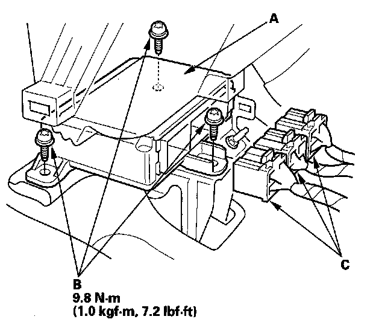

SRS Unit Replacement
SRS Unit ReplacementRemoval
NOTE: If you are only disconnecting SRS unit connector A, skip step 2.
1. Disconnect the negative cable from the battery, and wait at least 3 minutes before beginning work.
2. Disconnect both seat belt tensioner connectors.
3. Remove the driver's center console trim and passenger's center console trim.
4. Disconnect SRS unit connector A, connector B, connector C, and remove the TORX bolts (D), then pull out the SRS unit.
Installation

1. Install the new SRS unit (A) with new TORX bolts (B), then connect the connectors (C) to the SRS unit; push them into position until they click.
NOTE: Be sure the SRS unit is sitting squarely against it's bracket before torquing the TORX bolt.
2. Reconnect both seat belt tensioner connectors.
3. Reconnect the negative cable to the battery.
4. After installing the SRS unit, confirm proper system operation: Turn the ignition switch ON (II); the SRS indicator should come on for about 6 seconds and then go off.
5. Reinstall all removed parts.